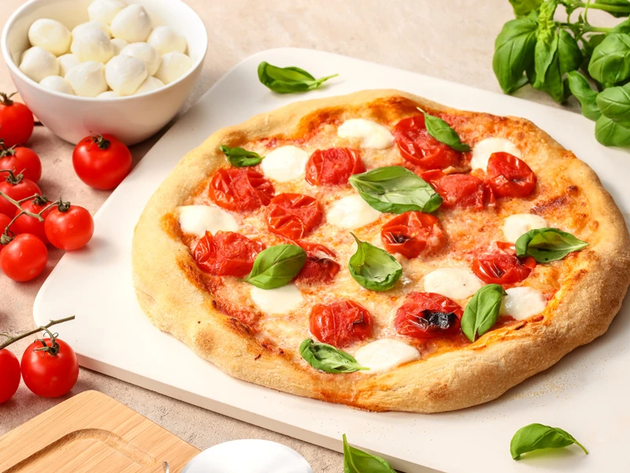

Homemade Pizza

How to Crunchy Pizza Crust
If you're looking for a homemade pizza crust recipe that's great for beginners, you're in luck.
This top-rated recipe is super easy to throw together on a whim – and it puts the store-bought stuff to shame.
Pizza Crust Ingredients
- Yeast
- Sugar
- Bread Flour
- Olive Oil
- Salt
Direction
- Gather all ingredients + Preheat oven to 230 Celsius
- Place warm water in a bowl; add yeast and sugar. Mix and let stand until creamy, about 10 minutes.
- Add flour, oil, and salt to the yeast mixture; beat until smooth.
- Let rest for 5 minutes.
- Turn dough out onto a lightly floured surface and pat or roll into a 12-inch circle.
- Transfer to the prepared pizza pan. + Add toppings of your choice.
- Bake in the preheated oven until golden brown, 15 to 20 minutes.
- EAT!
Source:
Original Pizza recipe